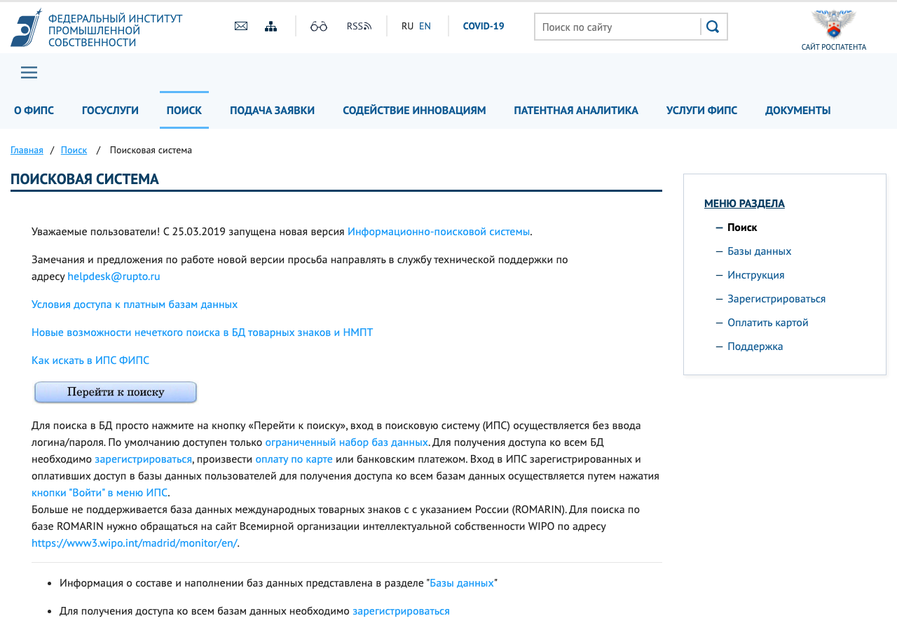

В отличие от авторского права, право на товарный знак возникает только после регистрации в Роспатенте. Знак регистрируется для конкретных классов Международной классификации товаров и услуг (МКТУ). Для SaaS обычно важны классы 9 (программы), 35 (реклама и управление бизнесом), 38 (телекоммуникации) и 42 (разработка ПО, SaaS).

Правообладатель вправе требовать прекратить использование обозначения, удалить его с сайта и из рекламы, передать домен и выплатить компенсацию: от 10 тыс. до 10 млн ₽ или двукратную стоимость права использования (п. 4 ст. 1515 ГК). Споры о доменных именах, совпадающих с товарными знаками, суды обычно решают в пользу правообладателя, если домен используется для однородных услуг.
Обозначения сходны по звучанию и смыслу, услуги однородны, приоритет у правообладателя.
Договориться о лицензии, оспорить знак (например, если правообладатель не использует его три года — досрочное прекращение по ст. 1486 ГК) или провести ребрендинг.
право — с регистрацииклассы 9, 35, 38, 42приоритет — по дате заявкисходство + однородностьдомен — способ использованияГК 1515 — до 10 млн ₽КоАП 14.10 — орг. 50–200 тыс.ФИПС: знаки и заявкиварианты написанияЕГРЮЛ и домены